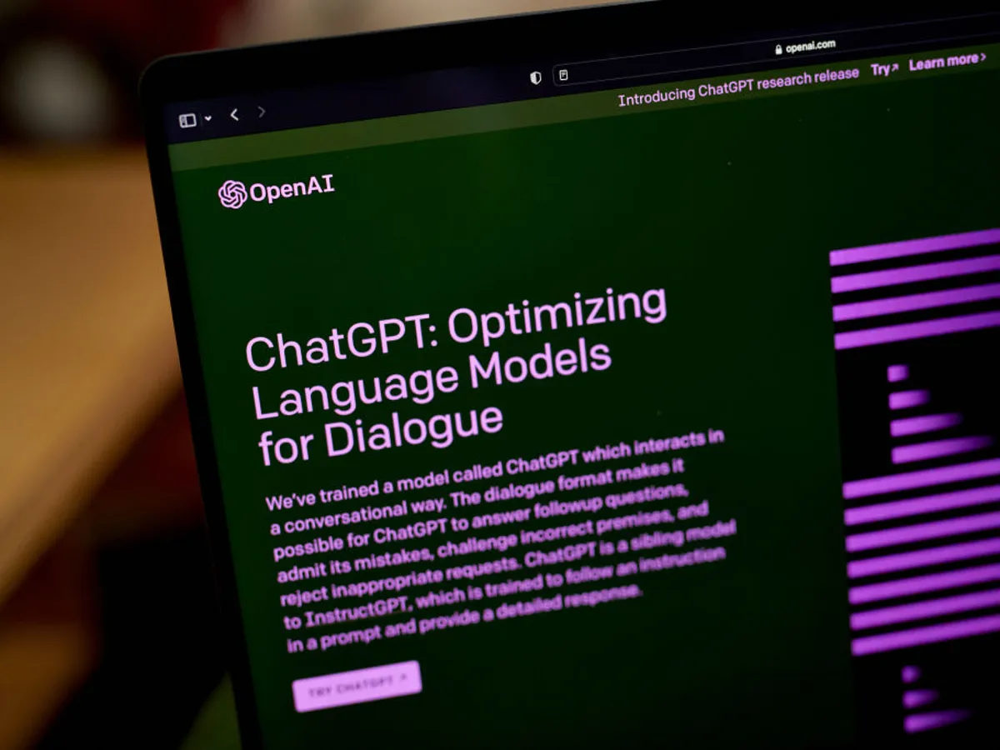

Only four months ago, ChatGPT suddenly appeared on the scene and started a technological revolution. Since then, chatbots have astounded with their capacity for essay and joke writing, frightened with their potential for human-like evil, and sparked a plethora of articles discussing how they will either advance or endanger humans.

It can ace most standardized certification tests
The outdated, feeble ChatGPT might pass or nearly pass the US Medical Licensing Test. Even though it couldn't pass the bar, it could get by with a passing mark on final examinations for law school and a decent essay. Pathetic. In most categories, GPT-4 students perform better than straight-A students.
OpenAI reveals in a lengthy blog post that GPT-4 passed the test, improving its predicted score from the tenth percentile to the ninety percentile. It also passed a slew of other challenging exams on a variety of topics, from the liberal arts to the hard sciences. It received scores of 5 in AP Statistics (up from 3 previously), 5 in AP Macroeconomics (up from 2), and even 92 on an exam on the basics of sommelier. At this time, it is unknown what it thinks of Merlot.
Yet there's one issue the chatbot still struggles with: formal written English. This might be some pleasant news for those who are concerned about a decline in interest in the humanities.
It can code out and build basic websites
In Silicon Valley, "generative AI," which can create words or images in response to user input, has been all the rage for some time. The "website-building" component of GPT-4 is added. With just a few written instructions, the bot can build a simple website
Although it's unknown at the moment whether GPT-4 is capable of more than just generating rudimentary websites, its quickly developing design skills are likely enough to worry web designers as well as, well, pretty much everyone else.
ChatGPT is by no means flawless. It is prone to providing incorrect answers, even for seemingly simple math problems, because of the way it generates responses. To put it in the most oversimplified terms possible, it generates responses by making probabilistic guesses about which text fragments belong together in a sequence using a statistical model trained on billions of examples of text extracted from the internet. (On Monday, the moderators of Stack Overflow, a programming-related website, briefly forbade users from posting answers produced by ChatGPT, claiming the site had been inundated with contributions that were wrong or incomplete.)